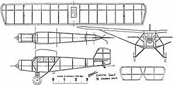
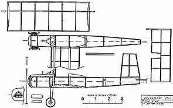
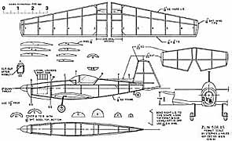
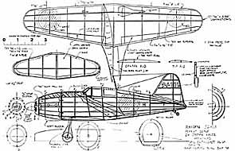

|
Here are preview glimpses of four Peanut Scale plans recently provided by Stephen Hales. You can download any of them by clicking on the preview. All of them are sized to 100 dpi. I have added a 3" scale that will help with accurate sizing. The Robin and Volksplane will squeeze onto a single 8.5x14 legal sized sheet. The Raiden and Zlin will need 11x17 tabloid, or taping together two 8.5x11 letter sheets.
Thanks Stephen! -Thayer |
|
 Curtiss Robin, 95kb |
 Volksplane VP-1, 74kb |
|---|
| These first two plans for the Curtiss Robin and Volksplane are both basic, without notes. Despite that, they are very buildable. I would recommend 1/16" sq balsa sticks throughout for beginners, 1/20 for the more experienced. For additional building and flying notes, take a look at the introductory builders guideline by George Benson, as well as the 10 step trimming primer submitted by John Koptonak Downloading the Zlin plan as well will help with similar construction techniques. |
| The Zlin is a much more detailed plan, with dimensioned parts, thrustline & dihedral notes, wire sizes, etc. It will also be a bit tougher building as the full sized design has a bubble canopy. Often times a blister pacakge in a local store can be had to suffice, otherwise you will need to form your own. Both the Zlin and the Volksplane will be slightly more difficult to fly than the Curtiss Robin due to the low wing configuration. |

Zlin 526 AS, 144kb |
|---|
|

Raiden J2M3, 230kb | The Raiden J2M3 plan is a more complex structure for a modeler with a few other projects under the belt. Despite this, Stephen includes copious notes for construction and color trim. The canopy looks like it can be approximated with flat sheet. Be sure to take pictures of the structure before covering. The formers and stringers of the fuselage promise a beautiful set of bones. It should be a great flyer with the landing gear "retracted". |
|---|
Click on a preview image to download the zipped plan.
Copyright 2000, Thayer Syme. All rights reserved